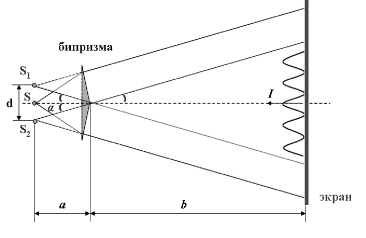

Бипризма Френеля
Алексей Егошин, P3113
Ярослав Кулинич aka Yarki, P3113
Расстояние от источника до призмы
Расстояние от призмы до экрана
Длина волны
Угол отклонения
Показатель преломления призмы
По умолчанию
